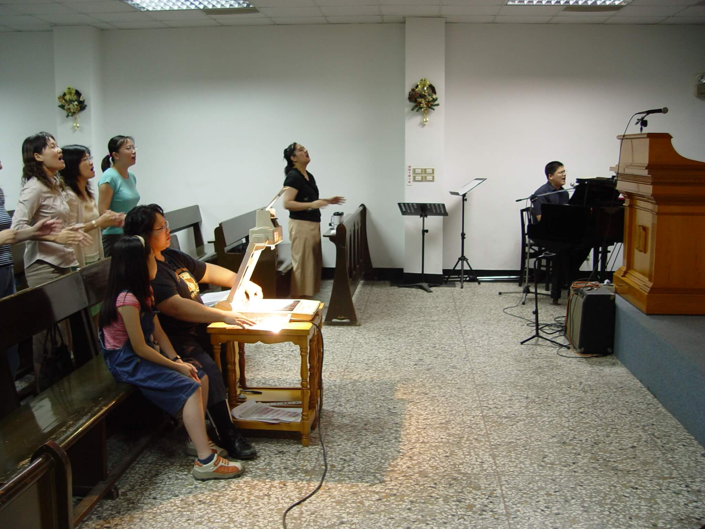

葛兆昕牧師從學生時期便開始嘗試詩歌創作，這些年來，陸陸續續創作了多首深入人心的敬拜歌曲，
而這些詩歌，往往是兆昕牧師在靈修、生活的體驗、經歷挑戰…之中，被神感動與觸摸所寫下的歌曲，
每一首歌曲中不只有情感，更富含神的話語，也表明了兆昕牧師對上帝呼召的回應。
這些詩歌流露出生命的恩膏，影響了世界各地許多人。一曲《祢愛永不變》，
在2000年為失去母親的陳逸豪牧師帶來極深的安慰，也在世界各地的華人地區不斷傳唱；《當祢找到我》的日文版，則在2016年熊本大地震中陪伴了許多受災的日本教會。在新冠疫情期間，兆昕牧師的多首歌曲更是為困境中的人們帶來安慰與盼望。
於是，兆昕牧師不僅自己創作歌曲，也教導與鼓勵教會的敬拜團創作詩歌，
張仁蕙傳道便與敬拜團同工創作了三首敬拜詩歌《一生所求》、《為祢站立》、《全心跟隨》。
對和平教會而言，詩歌創作也是回應神要我們「建造使徒性教會」呼召的行動之一，盼望能夠幫助與帶領弟兄姊妹，進到更深的敬拜中，對神有更深的經歷；
此外，我們或許無法親身去到每一個有需要的地區宣教，但詩歌卻能透過各種媒體去到那裡，也能觸摸人心。